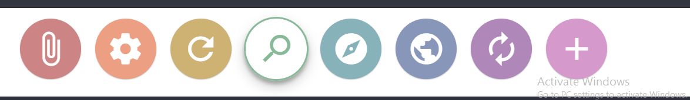

RESEARCH SECTION
1.
The homepage of my website jbl are almost same but mine is text hovering over it. It contains a 50% background image size for each img and text on the top
2.
The powercube website and my portfolio have same kind of carousal with images.
3.
The acer store login page and my page have the same kind of form with 3 input form the user and a login button whereas my contact page of my portfolio has a message form with submit button.
4.
Youtube and my portfolio have same kind of navigation bar except the left and right position. The position of the navigation bar on the left or right have more attention than the usual top one.
5.
The page and mine have the hover and rotating icon while pointer is pointed but mine is on the left side where his is in the footer
